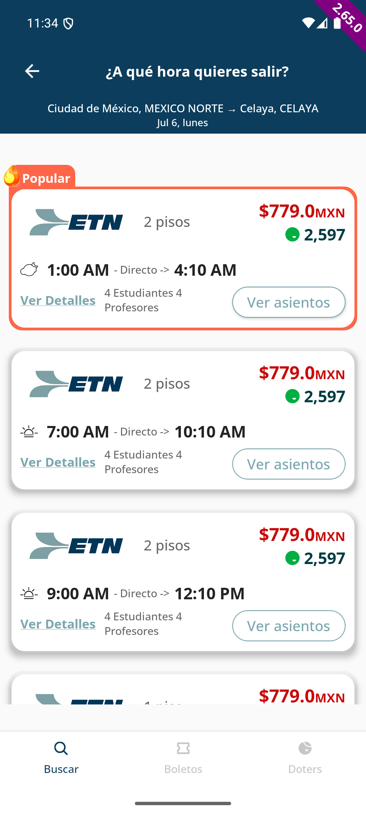
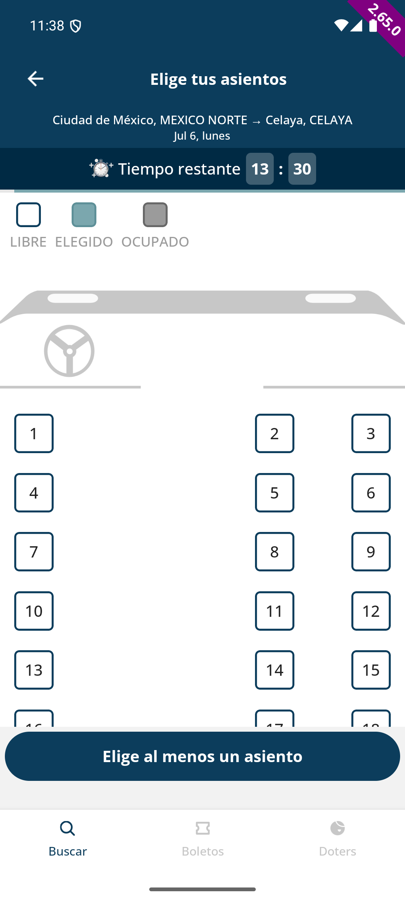
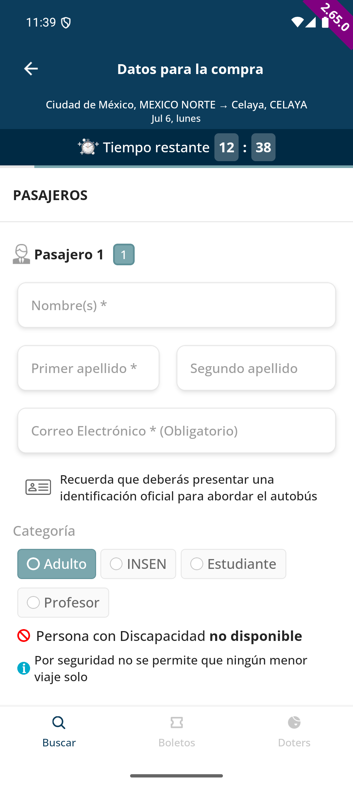
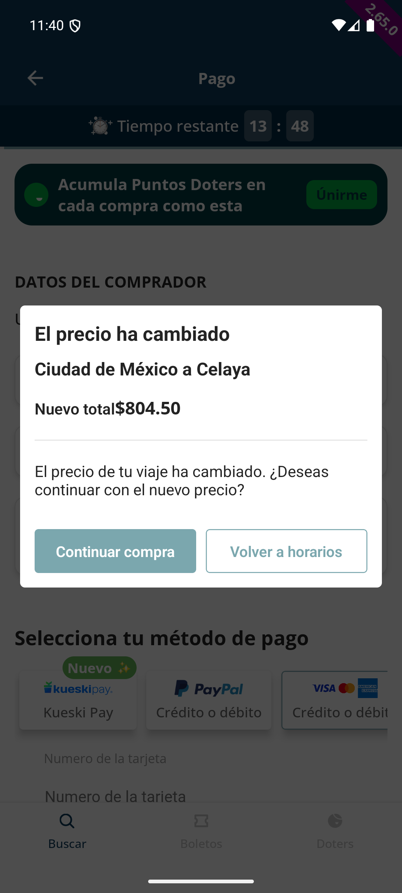
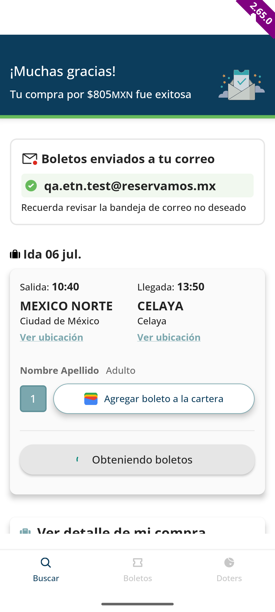
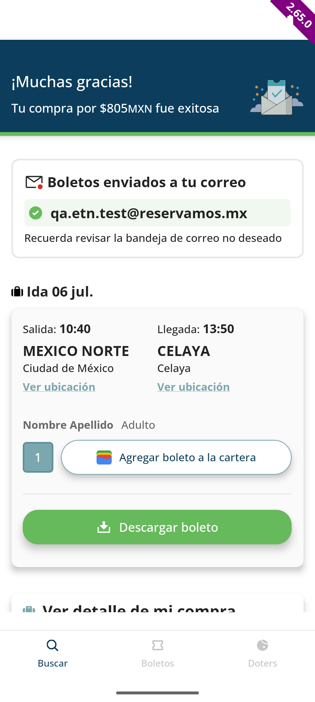

| Ruta | Ciudad de México (México Norte) → Celaya |
| Fecha | 06 jul., 10:40 AM (corrida de 1 piso) |
| Pasajeros | 1 Adulto |
| Asiento | 1 |
| Seguro "Viajero Protegido" | Apagado |
| Método de pago | Tarjeta (sandbox 4111 1111 1111 1111) |
| Total | $805 MXN |
| Resultado | Boletos enviados a qa.etn.test@reservamos.mx |
Resultados de búsqueda Ciudad de México → Celaya. Se eligió la corrida de 1 piso, 10:40 AM.

Mapa de asientos de un piso, todos libres. El script selecciona 1 asiento disponible.

Asiento 1 confirmado; formulario de pasajero listo para llenarse (Adulto, categoría por defecto).

Datos del comprador autocompletados desde el pasajero, seguro apagado, modal de "precio actualizado" resuelto, tarjeta sandbox capturada.

"¡Muchas gracias! Tu compra por $805MXN fue exitosa" — boletos enviados por correo.

Verificación del texto "Boletos enviados a tu correo" — COMPLETED.
